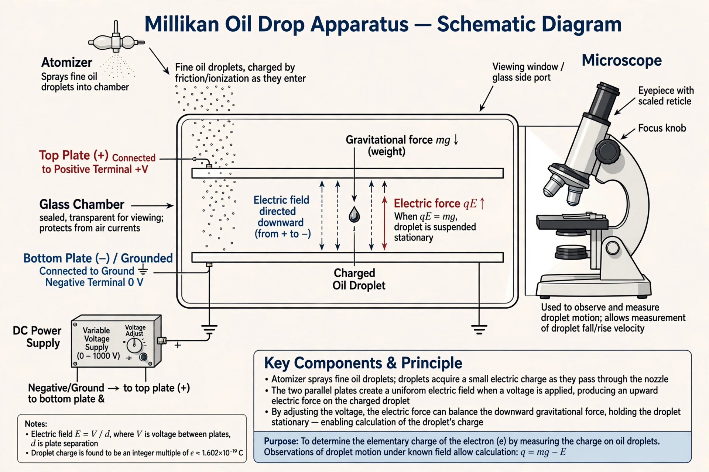

| Oil drop experiment | |
|---|---|
| Performed by | Robert A. Millikan and Harvey Fletcher |
| Location | University of Chicago |
| First results | 1909–1910; definitive paper 1913 |
| Measured | The elementary electric charge |
| Recognition | Nobel Prize in Physics, 1923 (Millikan) |
The oil drop experiment was performed by Robert A. Millikan and his graduate student Harvey Fletcher at the University of Chicago beginning in 1909. It measured the electric charge carried by a single electron, demonstrating that electric charge is quantized — that it always occurs in whole-number multiples of a fundamental unit, the elementary charge.
The apparatus sprayed a mist of fine oil droplets into a chamber between two horizontal metal plates. Individual droplets, watched through a microscope, fell under gravity and could be charged by friction or by ionizing the air with X-rays. By applying a voltage between the plates, an experimenter could slow, stop, or reverse a droplet's fall; balancing the electric force against gravity (and correcting for the droplet's fall speed in air, using Stokes's law) yielded the charge on the droplet.
Millikan found that the charges of hundreds of droplets were always integer multiples of a smallest value, about 1.592 × 10−19 coulombs. His 1913 result lay within about half a percent of the modern accepted value, e ≈ 1.602 × 10−19 C. The experiment provided compelling evidence for the existence of the electron as a particle with a definite, indivisible charge.
The experiment later became a famous case study in scientific ethics: Millikan's notebooks show that he published only a selection of his droplet runs, while his paper implied that all consecutive runs were included, and his dispute with Fletcher over authorship of the dissertation work also attracted attention. Physicist Richard Feynman popularized the episode in his 1974 address "Cargo Cult Science," noting how later measurements drifted only slowly away from Millikan's slightly low value, as scientists hesitated to contradict a celebrated result.
See also: Robert Andrews Millikan, Electron, Elementary charge